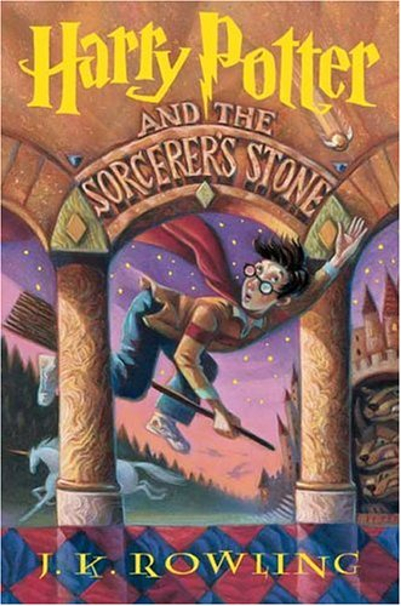

Buku ini ditulis oleh J.K. Rowling dan diterbitkan pada tahun 1997. Ini adalah buku pertama dalam seri yang terdiri dari tujuh buku dan mengikuti petualangan Harry Potter, seorang anak penyihir, di Hogwarts School of Witchcraft and Wizardry. Cerita ini memulai perjalanan yang epik dalam dunia sihir yang penuh dengan makhluk ajaib, sihir, dan petualangan.
Harry Potter and the Philosopher's Stone" mengisahkan tentang seorang anak bernama Harry Potter yang hidup dalam kondisi yang sangat tidak menguntungkan bersama bibi dan paman tirinya setelah kedua orang tuanya tewas dalam kecelakaan mobil saat ia masih bayi. Namun, pada ulang tahun kesebelasnya, ia tiba-tiba mengetahui bahwa ia adalah seorang penyihir, dan pintu ke dunia sihir yang ajaib terbuka baginya. Harry diundang untuk bergabung dengan Hogwarts School of Witchcraft and Wizardry, sebuah sekolah sihir yang terkenal. Di Hogwarts, Harry bertemu dengan teman-teman baru seperti Ron Weasley dan Hermione Granger. Mereka bersama-sama menjalani petualangan di sekolah ini, mempelajari sihir, dan mengejar misteri tentang "Batu Bertuah" (Philosopher's Stone) yang memiliki kekuatan untuk memberikan kehidupan abadi. Sementara itu, mereka juga mengetahui tentang sejarah kelam yang melibatkan penyihir jahat bernama Voldemort yang mencoba untuk kembali ke kekuasaan. Harry, Ron, dan Hermione kemudian terlibat dalam usaha untuk melindungi Batu Bertuah dari jangkauan Voldemort. Novel ini memadukan unsur-unsur sihir, petualangan, persahabatan, dan pertempuran antara kebaikan dan kejahatan, menjadikannya kisah yang menarik dan penuh pesan moral. Buku ini dibuatkan versi live action nya pada tahun 2001, berikut trailer dari film tersebut.

| kelebihan | kekurangan |
|---|---|
| Buku ini menciptakan dunia sihir yang sangat memikat dan detail, yang memungkinkan pembaca untuk merasakan keajaiban dan keindahan di dalamnya. | Awalnya ditujukan untuk pembaca muda, sehingga beberapa pembaca dewasa mungkin merasa beberapa aspek ceritanya agak sederhana atau terlalu anak-anak. |
| Karakter utama, termasuk Harry, Ron, dan Hermione, dikembangkan dengan baik, dengan kekuatan dan kelemahan mereka masing-masing. Ini membuat pembaca merasa terhubung dengan mereka. | Bagian awal buku ini mungkin terasa sedikit lambat bagi beberapa pembaca karena memperkenalkan dunia sihir yang kompleks. |
| Plot cerita yang menarik menggabungkan petualangan, misteri, dan elemen-elemen sihir yang membuat pembaca tertarik untuk terus membaca. | Beberapa kritikus telah mengangkat isu stereotip dalam karakter tertentu, meskipun seiring perkembangan seri, karakter tersebut menjadi lebih kompleks. |
Andini Gandes Rahmawati
11210251000002
5A Ilmu Perpustakaan